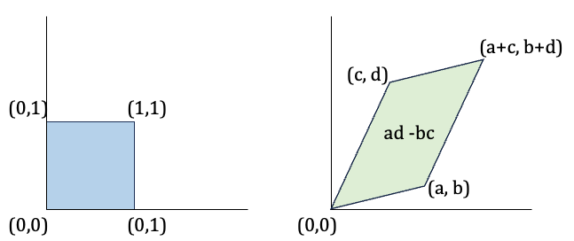

Normalizing Flow Models
Introduction
In generative modeling, the objective is to learn a probability distribution over data that allows us to both generate new examples and evaluate the likelihood of observed ones. For a model to be practically useful, it must support efficient sampling and enable exact or tractable likelihood computation during training.
A Variational Autoencoder (VAE) is a type of generative model that introduces latent variables \(z\), allowing the model to learn compact, structured representations of the data. VAEs are designed to support both sampling and likelihood estimation. However, computing the true marginal likelihood \(p(x)\) is often intractable. To address this, VAEs use variational inference to approximate the posterior \(p(z \mid x)\) and optimize a surrogate objective known as the Evidence Lower Bound (ELBO). This is made possible by the reparameterization trick, which enables gradients to flow through stochastic latent variables during training.
Normalizing flows address the limitations of VAEs by providing a way to perform exact inference and likelihood computation. They model complex data distributions using a sequence of invertible transformations applied to a simple base distribution. In this setup, a data point \(x\) is generated by applying a function \(x = f(z)\) to a latent variable \(z\) sampled from a simple prior (e.g., a standard Gaussian). The transformation is invertible, so \(z\) can be exactly recovered as \(z = f^{-1}(x)\). This structure enables direct access to both the data likelihood and latent variables using the change-of-variables formula.
This structure offers several advantages. First, each \(x\) maps to a unique \(z\), eliminating the need to marginalize over latent variables as in VAEs. Second, the change-of-variables formula enables exact computation of the likelihood, rather than approximations. Third, sampling is straightforward: draw \(z \sim p_Z(z)\) from the base distribution and apply the transformation \(x = f(z)\).
Despite these strengths, normalizing flows have limitations. Unlike VAEs, which can learn lower-dimensional latent representations, flows require the latent and data spaces to have equal dimensionality to preserve invertibility. This means flow-based models do not perform dimensionality reduction, which can be a disadvantage in tasks where compact representations are important.

VAEs compress data into a lower-dimensional latent space using an encoder, then reconstruct it with a decoder. Flow-based models use a single invertible transformation that keeps the same dimensionality between input and latent space. This enables exact inference and likelihood computation.
To understand how normalizing flows enable exact likelihood computation, we first need to explore a fundamental mathematical concept: the change-of-variable formula. This principle lies at the heart of flow models, allowing us to transform probability densities through invertible functions. We’ll begin with the 1D case and build up to the multivariate formulation.
Math Review: Change of Variables in 1D
Suppose we have a random variable \(z\) with a known distribution \(p_Z(z)\), and we define a new variable:
\[ x = f(z) \]
where \(f\) is a monotonic, differentiable function with an inverse:
\[ z = f^{-1}(x) = h(x) \]
Our goal is to compute the probability density function (PDF) of \(x\), denoted \(p_X(x)\), in terms of the known PDF \(p_Z(z)\).
Step 1: Cumulative Distribution Function (CDF)
We begin with the cumulative distribution function of \(x\):
\[ F_X(x) = P(X \leq x) = P(f(Z) \leq x) \]
Since \(f\) is monotonic and invertible, this becomes:
\[ P(f(Z) \leq x) = P(Z \leq f^{-1}(x)) = F_Z(h(x)) \]
Step 2: Deriving the PDF via Chain Rule
To obtain the PDF, we differentiate the CDF:
\[ p_X(x) = \frac{d}{dx} F_X(x) = \frac{d}{dx} F_Z(h(x)) \]
Applying the chain rule:
\[ p_X(x) = F_Z'(h(x)) \cdot h'(x) = p_Z(h(x)) \cdot h'(x) \]
Step 3: Rewrite in Terms of \(z\)
From the previous step:
\[ p_X(x) = p_Z(h(x)) \cdot h'(x) \]
Since \(z = h(x)\), we can rewrite:
\[ p_X(x) = p_Z(z) \cdot h'(x) \]
Now, using the inverse function theorem, we express \(h'(x)\) as:
\[ h'(x) = \frac{d}{dx} f^{-1}(x) = \frac{1}{f'(z)} \]
So the final expression becomes:
\[ p_X(x) = p_Z(z) \cdot \left| \frac{1}{f'(z)} \right| \]
The absolute value ensures the density remains non-negative, as required for any valid probability distribution.
This is the fundamental concept normalizing flows use to model complex distributions by transforming simple ones.
Geometry: Determinants and Volume Changes
To understand the multivariate change-of-variable formula, it’s helpful to first explore how transformations affect volume in high-dimensional spaces.
Let \(\mathbf{Z}\) be a random vector uniformly distributed in the unit cube \([0,1]^n\), and let \(\mathbf{X} = A\mathbf{Z}\) where \(A\) is a square, invertible matrix. Geometrically, the matrix \(A\) maps the unit hypercube to a parallelogram (in 2D) or a parallelotope (in higher dimensions).
The determinant of a square matrix tells us how that matrix scales volume in space. For example, if the determinant of a \(2 \times 2\) matrix is 3, then applying that matrix to a region will stretch its area by a factor of 3. A negative determinant also indicates a reflection (orientation reversal). The absolute value of the determinant is what we care about when measuring volume.
The volume of this parallelotope is equal to the absolute value of the determinant of matrix \(A\):
\[ \text{Volume} = |\det(A)| \]
This tells us how much the transformation \(A\) scales space. For example, if \(|\det(A)| = 2\), the transformation doubles the volume. To make this idea more concrete, consider the following illustration:

Figure: A linear transformation maps a unit square to a parallelogram. The area of this parallelogram is equal to the absolute value of the determinant ( |(A)| = |ad - bc| ).
Determinants and Probability Density
Now suppose we apply the linear transformation \(\mathbf{X} = A\mathbf{Z}\) to a random vector \(\mathbf{Z}\) with a known density \(p_Z\). The new density after transformation is:
\[ p_X(\mathbf{x}) = p_Z(W\mathbf{x}) \cdot |\det(W)| \quad \text{where} \quad W = A^{-1} \]
This is directly analogous to the 1D change-of-variable rule:
\[ p_X(x) = p_Z(h(x)) \cdot |h'(x)| \]
but now in multiple dimensions using the determinant of the inverse transformation.
Generalizing to Nonlinear Transformations
For nonlinear transformations \(\mathbf{x} = f(\mathbf{z})\), the idea is similar. But instead of a constant matrix \(A\), we now consider the Jacobian matrix of the function \(f\):
\[ J_f(\mathbf{z}) = \frac{\partial f}{\partial \mathbf{z}} \]
This Jacobian tells us how the function scales and rotates space locally around a point \(\mathbf{z}\). The determinant of the Jacobian gives the volume change factor at that point.
Multivariate Change-of-Variable Formula
Given an invertible transformation \(\mathbf{x} = f(\mathbf{z})\), the probability density transforms as:
\[ p_X(\mathbf{x}) = p_Z(f^{-1}(\mathbf{x})) \cdot \left| \det \left( \frac{\partial f^{-1}(\mathbf{x})}{\partial \mathbf{x}} \right) \right| \]
Alternatively, in the forward form (often used during training):
\[ p_X(\mathbf{x}) = p_Z(\mathbf{z}) \cdot \left| \det \left( \frac{\partial f(\mathbf{z})}{\partial \mathbf{z}} \right) \right|^{-1} \]
This generalizes the 1D rule and enables us to compute exact likelihoods for complex distributions as long as the transformation is invertible and differentiable.
Model Formulation
A normalizing flow model defines a one-to-one and reversible transformation between observed variables \(\mathbf{x}\) and latent variables \(\mathbf{z}\). This transformation is given by an invertible, differentiable function \(f_\theta\), parameterized by \(\theta\):
\[ \mathbf{x} = f_\theta(\mathbf{z}) \quad \text{and} \quad \mathbf{z} = f_\theta^{-1}(\mathbf{x}) \]
Because the transformation is invertible, we can apply the change-of-variable formula to compute the exact probability of \(\mathbf{x}\):
\[ p_X(\mathbf{x}; \theta) = p_Z(f_\theta^{-1}(\mathbf{x})) \cdot \left| \det \left( \frac{\partial f_\theta^{-1}(\mathbf{x})}{\partial \mathbf{x}} \right) \right| \]
This makes it possible to evaluate exact likelihoods and learn the model via maximum likelihood estimation (MLE).
Note: Both \(\mathbf{x}\) and \(\mathbf{z}\) must be continuous and have the same dimensionality since the transformation must be invertible.
A Flow of Transformations
The term flow refers to the fact that we can compose multiple invertible functions to form a more expressive transformation:
\[ \mathbf{z}_m = f_\theta^{(m)} \circ f_\theta^{(m-1)} \circ \cdots \circ f_\theta^{(1)}(\mathbf{z}_0) \]
In this setup: - \(\mathbf{z}_0 \sim p_Z\) is sampled from a simple base distribution (e.g., standard Gaussian) - \(\mathbf{x} = \mathbf{z}_M\) is the final transformed variable - The full transformation \(f_\theta\) is the composition of all \(M\) steps

Figure: A normalizing flow transforms a simple distribution into a complex one using invertible transformations. (Adapted from Wikipedia)
The density of \(\mathbf{x}\) is given by the change-of-variable formula:
\[ p_X(\mathbf{x}; \theta) = p_Z(f_\theta^{-1}(\mathbf{x})) \cdot \prod_{m=1}^M \left| \det \left( \frac{\partial (f_\theta^{(m)})^{-1}(\mathbf{z}_m)}{\partial \mathbf{z}_m} \right) \right| \]
This approach allows the model to approximate highly complex distributions using simple building blocks.
Learning and Inference
Training a flow-based model is done by maximizing the log-likelihood over the dataset \(\mathcal{D}\):
\[ \max_\theta \log p_X(\mathcal{D}; \theta) = \sum_{\mathbf{x} \in \mathcal{D}} \log p_Z(f_\theta^{-1}(\mathbf{x})) + \log \left| \det \left( \frac{\partial f_\theta^{-1}(\mathbf{x})}{\partial \mathbf{x}} \right) \right| \]
Key advantages of normalizing flows:
- Exact likelihoods: No approximation needed — just apply the change-of-variable rule
- Efficient sampling: Generate new data by drawing \(\mathbf{z} \sim p_Z\) and computing \(\mathbf{x} = f_\theta(\mathbf{z})\)
- Latent inference: Invert \(f_\theta\) to compute latent codes \(\mathbf{z} = f_\theta^{-1}(\mathbf{x})\), without needing a separate encoder
Computational Considerations
One challenge in training normalizing flow models is that computing the exact likelihood requires evaluating the determinant of the Jacobian matrix of the transformation:
- For a transformation \(f : \mathbb{R}^n \to \mathbb{R}^n\), the Jacobian is an \(n \times n\) matrix.
- Computing its determinant has a cost of \(\mathcal{O}(n^3)\), which is computationally expensive during training — especially in high dimensions.
Key Insight
To make normalizing flows scalable, we design transformations where the Jacobian has a special structure that makes the determinant easy to compute.
For example: - If the Jacobian is a triangular matrix, the determinant is just the product of the diagonal entries, which can be computed in \(\mathcal{O}(n)\) time. - This works because in a triangular matrix, all the off-diagonal elements are zero — so the determinant simplifies significantly.
In practice, flow models like RealNVP and MAF are designed so that each output dimension \(x_i\) depends only on some subset of the input dimensions \(z_{\leq i}\) (for lower triangular structure) or \(z_{\geq i}\) (for upper triangular structure). This results in a Jacobian of the form:
\[ J = \frac{\partial \mathbf{f}}{\partial \mathbf{z}} = \begin{pmatrix} \frac{\partial f_1}{\partial z_1} & 0 & \cdots & 0 \\ \ast & \frac{\partial f_2}{\partial z_2} & \cdots & 0 \\ \vdots & \vdots & \ddots & \vdots \\ \ast & \ast & \cdots & \frac{\partial f_n}{\partial z_n} \end{pmatrix} \]
Because of this triangular structure, computing the determinant becomes as simple as multiplying the diagonal terms:
\[ \det(J) = \prod_{i=1}^{n} \frac{\partial f_i}{\partial z_i} \]
This is why many modern flow models rely on coupling layers or autoregressive masking: they preserve invertibility and enable efficient, exact likelihood computation.
🧪 Try It Yourself
You can explore a minimal PyTorch implementation of a normalizing flow model:
- 📘 View Notebook on GitHub
- 🚀 Run in Google Colab